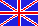
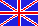
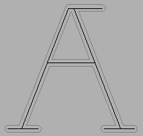
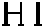
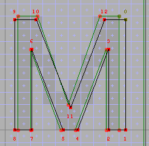
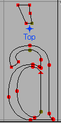
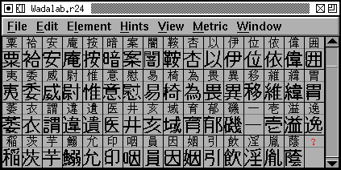
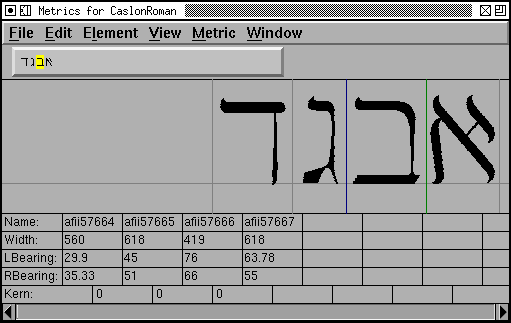

FontForge
アウトラインフォントエディタ
 



 目次
目次
- 概要
-
例
- チュートリアルとユーザガイド
- 特別な用字系に対する特別な考慮点
- フォントビュー
- アウトライングリフビュー
- ビットマップグリフビュー
- メトリックビュー
- メニューコマンド
- スクリプト
-
付録…
- FontForge を TeX で利用する方法
- 地域化
- エラー回復
- X リソース
- コマンドライン引数
- ファイル
-
内部構造
- ソースファイルの概要 (古びていますが基本は変わっていません)
- Spline Font Database ファイルフォーマット (これも時代遅れです)
- プラグイン
- PostScript から TrueType への変換
- Unicode 私用領域の FontForge による使用法
- フォントサンプル
- よくある質問
- ホットキー一覧
- タイポグラフィ用語辞典
- 索引
- ファイルリスト
- 参照文献
- ライセンスと著作権
- ダウンロード
参照
イーヨーは、地面においてある三本の棒をながめていました。二本は、かたほうのはしでぶつかっていて、もう一方のはしでは、はなれていました。そして、その二本の上に、もう一本の棒がのっていました。コブタは、きっとなにかのわなだろうと思いました。「あのイーヨー。」と、コブタはもういちどいいました。「ぼく、ちょっと——」
「コブちゃんかな?」イーヨーは、まだ棒をながめながら、いいました。
「ええ。イーヨー。ぼくね——」
「おまえ、これ、なんだか知っとるか?」
「いいえ。」
「これは、A の字じゃ」
「ああ。」と、コブタがいいました。
「アーじゃないぞ。エーじゃ。」イーヨーは、こわい声でいいました。
— A. A. ミルン, 1928 年
『プー横丁にたった家』
(石井桃子訳)
フォントデザインは罠になることもありますが、かなり楽しいものであることを私は知っています。用心して遣ひませう。
概要
FontForge を使うと PostScript, TrueType および OpenType フォントの作成・編集ができます。さまざまな種類のアウトラインフォントのフォーマットでフォントを保存することができ、ビットマップの生成が可能です。
FontForge のインストールおよび構築方法
| Mac | MS/Windows | VMS | ソースからの構築方法 | 削除方法 |
初歩的な 概念: フォント、スプライン、線、点、パスと em ユニット
単純化すると、フォントとはグリフを集めたものです。しかし、コンピュータフォントにはそれ以外の情報が必要です。最低でも、入力されたバイト列を目に見えるグリフ表示の出力に対応づけるための情報が必要です。この対応情報をエンコーディングと呼びます。多くのフォントには、隣接するグリフがどのように配置するかのルールも含まれています。例えば、ラテンアルファベットのフォントでは、“f”と“i”が隣接した時には、それらの代わりに特別なグリフである“f”と“i”の合字を出力するように指示するルールがしばしば含まれています。ラテンも時のフォントはそのようなルールを一般には必要としません (しかしそれらを含むように拡張することはできます) が、その他の用字系、例えばアラビア文字ではそれらは欠かせない物です。
文字とグリフはどう違うのか?
文字というのは抽象的な概念であり、グリフはその概念を実体化した物です。“A”という字は 1 個の文字であり、その一方、 はすべてが、“A”を表現するグリフの一例です。ラテン文字のフォントでは、各文字ごとに 1 個のグリフが割り当てられていて、各グリフは 1 個の文字を表していますが、絶対にそうだとは限りません——ルネッサンス期の印刷では、小文字の s に短い s と 長い s の 2 つのグリフ
はすべてが、“A”を表現するグリフの一例です。ラテン文字のフォントでは、各文字ごとに 1 個のグリフが割り当てられていて、各グリフは 1 個の文字を表していますが、絶対にそうだとは限りません——ルネッサンス期の印刷では、小文字の s に短い s と 長い s の 2 つのグリフ  がありました。2 個 (以上) の文字を表現する 1 個のグリフの例としては、合字が挙げられます。アラビア文字では、ほとんどの文字は少なくとも 4 つの異なるグリフをおり、適切なグリフはその前後にある文字により決まります。アラビア文字の「シーン」という文字には 4 つの異なる形 があります。
がありました。2 個 (以上) の文字を表現する 1 個のグリフの例としては、合字が挙げられます。アラビア文字では、ほとんどの文字は少なくとも 4 つの異なるグリフをおり、適切なグリフはその前後にある文字により決まります。アラビア文字の「シーン」という文字には 4 つの異なる形 があります。
アウトラインフォントとは何か? ビットマップフォントとは何か?
フォント内の各グリフは 1 個の図形ですが、計算機上での図形の表現にはいろいろな方法があります。PostScript および TrueType 形式のフォントでは一般に、図形のアウトラインを描画してから、そのアウトラインの内部を塗りつぶします。この塗りつぶし処理のことを ラスタ化 (ラスタライズ) と言います。それに対して、ビットマップフォントはピクセル (画素) が長方形に並んだグリッドを塗りつぶして各グリフを表現しています。ストロークフォントという第 3 のタイプもあり、グリフの各ステム (画線) をその中心を通る線によって表現し、後でその線を所定の幅でなぞり描きします。ほとんどの場合、ストロークフォントを直接扱うことはしません (輪郭を太らせる(E)... コマンドを使うと、ストロークをアウトラインに変換することができます) が、ストロークフォントを編集したい場合には複数レイヤ編集のセクションを参照してください。
|
|
 |


1 本のアウトラインは、1 組の輪郭線 (パス) から構築されています。左上の図では文字 A が 3 本に分かれたパスによって記述されています。主要な 1 本が外側にあり、その内側に小さな 2 本のパスを含んでいます。これらの各パスはスプラインと線分を連ねて構築されています。FontForge は 3 次および 2 次のスプラインを取り扱うことができます。PostScript フォントは 3 次スプラインを、 TrueType フォントは 2 次スプラインを使用します。
各々の 3 次スプラインは、4 個の点によって定義され、そのうちの 2 個はスプラインの端点を示し、残りの 2 個はその端点におけるスプラインの傾きを示します。以下の例は、2 本の 3 次スプラインとそのすべての点を表示したものです:

傾きを指定するための点は制御点 (control points) と呼ばれます。 それらはこの図では (FontForge でも同様に) 色のついた小さな×印で表されます。 制御点を動かすと、スプラインの形は変わりますが、スプラインの始まりと終わりの位置は変わりません。
 スプラインと線分の列は、1 個のパスを構成するように順番に結合されます。
これらの結合を行うには、図に表したようないくつかの可能な方法があります。
これらのどの例でも、3 個の点の相対位置はほぼ同じになっています。
3 個の点はスプラインまたは直線によって結合していますが、そのタイプごとに結合部の形は変わります。
スプラインと線分の列は、1 個のパスを構成するように順番に結合されます。
これらの結合を行うには、図に表したようないくつかの可能な方法があります。
これらのどの例でも、3 個の点の相対位置はほぼ同じになっています。
3 個の点はスプラインまたは直線によって結合していますが、そのタイプごとに結合部の形は変わります。
最初の例では制御点は存在せず、その結果は 2 本の直線となります。2 番目の例では 1 本の直線と、そこに接する点において等しい傾きを持つ曲線片が描かれています。3 番目の例では、2 本のスプラインが交点において上と同様に傾きを等しくしています。最初の例の合流点は角の点 (corner point) と呼ばれ、そこから出るスプラインとそこに入るスプラインの角度は任意の方向を取ることができます。これは FontForge では四角い箱で表されます。2 番目の例では合流点は接点 (tangent point) と呼ばれ、1 個の三角形で表されます。3 番目の例では合流点は円形で表されます。
FontForge は (TrueType フォントで使用される) 2 次のスプラインを編集することもできます。それには制御点は 1 個しかなく、両側の端点における傾きを制御します。2 次スプラインは 3 次スプラインほど自由に折り曲げることができないために (左上のスプラインを 2 次スプラインで表すには 2 本以上のスプラインに分ける必要があります) 同じ曲線を得るために、より多くのスプラインを必要とすることになるでしょう。フォントが 3 次スプラインを含むか、2 次スプラインを含むかは エレメント(L)→フォント情報(F)... コマンドで制御することができます。
パスは、最初の点に戻って来て結合した時に閉じられます。アウトラインフォントに含まれるすべてのパスは閉じていなくてはなりません。パスが閉じられたとき、それは向きを持っていると呼ぶことができます。それは本質的には「パスは時計回りに作られたか、それとも反時計回りに作られたか?」と考えることができます (この見方は実際には少し単純すぎます。もしパスが自己交差していて 8 の字形になっていたならば、その方向は時計回りとも反時計回りとも言い切れません。しかし殆どのパスは自己交差しません (フォント内のパスは自己交差するのは望ましくありません) から、私達はパスを時計回りまたは反時計回りと呼ぶことによって人生を簡単にすることにしましょう)。
アウトライングリフを描画する時には、私たちはアウトラインの内側にある物すべてを黒く塗りたいわけです。でも上の A の字を見てください。主要なアウトラインパスの内側に 2 本のパスがあり、それら 2 本のパスの内側は黒ではなく白くしたいのです。どうやればこれらを区別することができるのでしょうか? パスの方向によって区別を行うのです。グリフ内の任意の点を考えましょう。その点から無限遠まで (任意の方向へ向けて) 想像上の直線を引き、その線がパスに交差する回数を数えるならば、時計回りのパスに交差するごとに回数に 1 を加え、反時計回りのパスに交差するごとに 1 を引きます。結果として得られた回数が 0 でなければその点を黒く塗り、そうでなければ白いままにしておきます。ですから、上の A の字がうまく動くようにするためには外側のパスを時計回りに、内側のパスを反時計回りに設定します (逆周りにしてもうまくいきますが、慣習として、外側のパスを時計回りにします)。
これらの点はすべて (端点と制御点のどちらも) 数学的に表現されています。各点は、グリフのベースライン (ディセンダーを持たない文字が置かれている線) を原点とするデカルト座標上に置かれています。ほとんどのフォントフォーマットは、座標値が -32768 から 32767 の間の整数値であることを仮定しています。FontForge は内部的には実数を使用していますが、フォントファイルの生成時には (通常は) 最も近い整数への丸めを行います。
私たちはフォントを表示するときには、フォントのサイズを表現するために“em”という単語を使います。あるフォントが 12 ポイントで表示されている場合、その時 1 em は 12 ポイントとなります。そのフォントが 18 ポイントで表示されると、em は 18 ポイントとなります。(伝統的には、12 ポイントのフォントは、字面の上下の高さが 12 ポイントある金属の塊を指していました——または、行間を空けずに組んだテキストのベースラインとベースラインの間隔が 12 ポイントのことを指していました。ですから、em は金物のサイズだったのです)。
アウトラインフォントをデザインするときには、もはやポイント単位で物を考えるわけにはいきません——それらのフォントはスケーラブルであり、どんなポイントサイズにも拡大・縮小できるのです。em と em の分数で考える必要があります。フォントを作成したとき、1 em が内部的なサイズの単位 (これを“em ユニット”といいます) で何ユニットにあたるかを設定しなければなりません。ほとんどの PostScript フォントでは、em を 1000 ユニットとしており、TrueType フォントでは em を 1024 または 2048 ユニットのどちらかとするのが割合よく見られます (いくつでも好きな数値 (ただし、32767 より小さくなくてはなりません) を選択することができます。上記の数値は習慣的な物であり、必須事項ではありません)。
ある PostScript フォントでダッシュ(‐) を作り、その幅を 500 ユニットに設定したときにそのフォントの em が 1000 ユニットだったとしましょう。誰かがそのダッシュを 12 ポイントで表示したときに、そのダッシュは 500/100 * 12 = 6 ポイントの長さをで描画されます。72 dpi, つまり 1 インチあたり 72 ドットの解像度をもつ画面では、1 ピクセルがほとんど正確に 1 ポイントとなるので、そのダッシュは 6 ピクセルの長さになるでしょう。
 あらゆるグリフはそれ自身の座標系をもっています。フォントのベースライン (ほとんどのラテン文字の下端となる線) が垂直座標が 0 となる位置です。水平方向の原点は、グリフの描画が始まる点です (まず始めは何も「描画」されないのが普通です——なぜかと言うと、通常は原点とグリフの端との間にある程度の空白があるからです)。原点からグリフの左端へ向かうこの水平距離のことを左サイドベアリングと呼びます (これは 0 より小さい場合も、大きい場合も、ちょうど 0 の場合もあります)。すべてのグリフは幅を持っています (時には送り幅 (advance width) と呼ぶこともあります)。これは、現在のグリフの原点から次のグリフの原点までの移動量です。グリフの右端と横幅の間の距離を右サイドベアリングと呼びます。
あらゆるグリフはそれ自身の座標系をもっています。フォントのベースライン (ほとんどのラテン文字の下端となる線) が垂直座標が 0 となる位置です。水平方向の原点は、グリフの描画が始まる点です (まず始めは何も「描画」されないのが普通です——なぜかと言うと、通常は原点とグリフの端との間にある程度の空白があるからです)。原点からグリフの左端へ向かうこの水平距離のことを左サイドベアリングと呼びます (これは 0 より小さい場合も、大きい場合も、ちょうど 0 の場合もあります)。すべてのグリフは幅を持っています (時には送り幅 (advance width) と呼ぶこともあります)。これは、現在のグリフの原点から次のグリフの原点までの移動量です。グリフの右端と横幅の間の距離を右サイドベアリングと呼びます。
CJK (中国・日本・韓国) のテキストは縦にも横にも書くことができますので、CJK のフォントはほとんど常に備えている横書き用の送り幅に加えて、縦書き用の送り幅を含んでいるのが普通です。
“g”や“y”のような文字のグリフにはベースラインよりも下に延びる部分があり、これをディセンダと呼びます。同様に、“k”や“l”のような文字のグリフには x ハイトより上に延びる部分があり、これはアセンダと呼びます。ほとんどのラテン (並びにギリシャ及びキリル) アルファベットのフォントはいくつかの標準の高さを持っています: (アセンダを持たない) 小文字の高さは x ハイトと呼ばれ、大文字の高さはキャップハイトと呼ばれます。アセンダの高さはアセンダハイトと呼ばれます (すべてではありませんが、多くのフォントはアセンダと大文字がほぼ同じ高さに並びます)。通常はこれらはすべてのグリフに対して正確に同じ値ではなく、文字“O”は通例文字“I”よりもわずかに高くなっていますが、どちらの高さも、そのフォントのキャップハイトの範囲内に収まっています。
フォントそのものにも、それらに付随する高さ(アセント)と深さ(ディセント)が定められています。昔の金属活字では、あらゆる線はそれらの値より上や下にはみ出すことはできませんでした。現在ではアクセントやアセンダをフォントの高さより上に上げたり、ディセンダをフォントの深さよりも下に下げたりすることができますが、今でもこの概念を残しておくと便利です。ほとんどすべての場合、グリフはフォントの高さより上や深さより下にはみ出すことがないのは事実です。高さと深さの合計がフォントのサイズです。金属活字の一本のポイントサイズは、この値によって決まります (必然的に、字面を支えている金属のブロックの高さとなります)。PostScript フォントでは、フォント内部のローカル座標系は、フォントが描画される最終的なサイズに関係がありません。PostScript では慣習的に高さと深さの和を 1000 ユニットにすることになっています。TrueType では通常は 2 の冪乗の値 (多くは 2048) を使用します。
TrueType 対 PostScript 対 OpenType フォント 対 SVG フォント
FontForge はさまざまなタイプのフォントを出力することができます。それらはどう違うのでしょうか?
PostScript は 3 次スプライン 技術に基づいていますが、TrueType は 2 次スプライン 技術に基づいています。一般に、編集が行いやすいのは 3 次スプラインのほうです (より多様な形を表現することができる)。任意の 2 次スプラインは本質的に損失なしに 3 次スプラインに変換することができます。3 次スプラインは任意の精度で変換することができますが、ほとんどの場合はわずかな精度の低下があります。これは、TrueType のアウトラインを PostScript アウトラインに変換することは容易であるが、PostScript から TrueType に変換するのはより困難であることを意味します。
FontForge の内部では、フォントは 3 次または 2 次のスプラインを含むことができます。それらは、TrueType フォントが生成される時に適切なフォーマットに変換されます。
これら二つの違いで主なものはほかに、小さなポイントサイズの時に美しい字形を得るという問題の解決方法があります。 PostScript ではこれを「ヒントづけ」と呼び、TrueType ではフォントへの「命令」と呼びます。
OpenType とは何か?
残念なことに“OpenType”という単語には 2 つの意味があります。
第 1 の意味としては、フォントのスプラインフォーマットのことです。この意味では、OpenType は単に PostScript フォントを TrueType フォントフォーマットに埋め込んだものにすぎません——外から見ると、アウトライン記述が TrueType で定められた方式でなく PostScript Type2 フォントを用いていることを除いては、TrueType フォントと同様に見えます。
第 2 の意味としては、OpenType という単語は高度な組版に関する情報を含む一連のテーブルのことを指します。これらのテーブルは、2 次スプライン (TrueType) で記述されたフォントにも、3 次スプラインで記述されたフォントにも追加することができます。
最後の意味として、MS Windows が OpenType アイコンを使って表示するのは ‘DSIG’ (デジタル署名) テーブルを含むフォントの場合です。
話を更にややこしくさせることには、OpenType の仕様には昔の TrueType の仕様が含まれているので、技術的には任意の TrueType フォントを OpenType フォントと呼ぶことができるのです。
SVG とは何か?
SVG (Scalable Vector Graphics) では、XML の一方言で描かれた比較的新しいフォントフォーマットを提供しています。SVG フォントでは 3 次か 2 次の曲線を使用することができます (または両方を使用することもできますが、FontForge の機能制限で、フォント全体を 3 次か 2 次のどちらかに揃える必要があります)。SVG では 2 種類の異なる型のフォントが可能です。片方はほぼ PostScript Type1 フォントと同じで、もう片方は、ほぼ PostScript Type3 フォントと同じです (SVG フォントでは画像が使用できない点が異なります——使用できるとしても、私にはそうは読み取れませんでした)。
Type 3 フォントとは何か?
PostScript の初期の頃の話ですが、Type1 フォーマットは商用のものであり、Adobe だけが Type1 フォントを作成することができましたが、Type3 フォントは誰でも作成できました。Type3 フォントにはヒント機能がありませんでしたが、任意の PostScript コマンドを含めることができたので、より広い範囲の図形 (複数色のグリフ、ストローク表示のグリフ、画像の拡大縮小によるグリフなど) を生成することができました。ほとんどの場合はこれらの拡張は不要で、ヒントが無いという欠点は煩わしいものでした。FontForge を複数レイヤー機能つきでコンパイルした場合、Type3 フォントを作成することができます。
Type 1 フォントとは何か?
それらは標準の PostScript フォントです。
Type 2 フォントとは何か?
それらは、Type1 と同じ情報を表現するのに、僅かに異なる内部フォーマットを使用します。
ヒント
小さなピクセルサイズでは、アウトラインフォントの内部を描画するプロセスをうまく処理するのは非常に困難です。PostScript と TrueType では、小さなフォントをどのように描画するかに関する情報をラスタライザに与える問題に対して異なるアプローチをとっています。
 |
|
-
Postscript
-
Adobe ははラスタライザに、処理をどう行うかに関するヒントを与えるためのいくつかの異なる方法を取り込みました。それらのうち最も分かりやすいのは水平と垂直のステムヒントです。各グリフは、どこにステムがあるかをラスタライザに教えるため、そのグリフ独自のヒントの組を持っています。通常、FontForge は妥当なステムヒントの組を検出します (自動ヒントづけと呼ばれる処理) が、一部のグリフは複雑すぎて、良くない選択をすることがあります。この選択を上書きできるようなモードも提供されています。
Adobe の方式には、くぼんだセリフを扱う flex ヒントというものもあります。これは、水平線 (または垂直線) から僅かにずれているだけの曲線を、小さなポイントサイズでは直線として表示し、大きなサイズでは曲線として表示するというものです。FontForge は、適切だと判断した時にこれを使用します。
ヒントの最初のバージョンでは、ヒント同士が重なり合うことはできませんでした。つまり、ほとんどのセリフを記述することができなかったということです。Adobe はその後、グリフの異なる部分ごとに重なり合わないヒントのセットを使用可能にする、ヒント置換というメカニズムを開発しました。これでも完全にヒントづけられない図形は存在しますが、ヒント置換は 1 つの改良でした。
ヒント(I)→自動ヒント(H)コマンドは、ステムの重なり合いを検出し、現在のヒントセットをどう変えるべきかを表示します。ヒント(I)→ヒントが置換する点(S)コマンドも、どこでヒントの変更が起こるかを表示し、[点の情報]ダイアログの[ヒントマスク]タブでユーザがそれを直接制御できるようにします。だいぶ最近になって、Adobe はグリフ内のカウンタ (ステム間の空き) を制御する手段を提供しました。オリジナルの Type1 記法では、“m”の水平カウンタや“E”の垂直カウンタをサポートしていましたが、より複雑な形を取り扱うことはできませんでした。(Type1 フォントの) カウンタヒントは、非ラテン (ギリシャ・キリル) 文字のグリフセットでのみ使用することができます。Type2 (OpenType) フォントでは、事情はもう少し複雑です。FontForge は、適切だと判断した時にはカウンタヒントを生成します。
Adobe はフォント単位のヒントづけ機能をいくつか提供しています。いちばん分かりやすい 2 つは、プライベート辞書に含まれる BlueValues と StemSnap 設定です。BlueValues は、興味ある事柄が起こる高さの範囲のリスト (ラテン文字のフォントでは、これはアセンダハイト、キャップハイト、x ハイト、ベースラインおよびディセンダハイトが含んでいるはずです) を提供します。小さなポイントサイズでは、これらの範囲に入ったすべてのものが同じ高さに揃えられます。それに対して、より大きなポイントサイズでは、高さにはわずかな差がつけられます (例えば、“o”と“x”は、通常わずかに異なる高さを持っていますが、小さなポイントサイズでその違いを表示すると汚く見えます)。同様に、StemSnap 変数は、フォントの標準的ステム幅を指定します。FontForge は、これらの適切な値を推測します。自分で値を設定することもでき、その場合はこの推測よりも優先して用いられます。プライベート辞書とその機能に関するより包括的な説明については、Adobe のType1 フォントの仕様書を参照してください。
FontForge の自動ヒントコマンドは、BlueValues が設定されているとより適切に動作します。ですから、自動ヒントづけを実行する前に、エレメント(L)→フォント情報(F)...→[PS Private辞書]でこの配列に値を設定してください。 自動ヒントづけが終った後、StemSnap を再生成する必要があるでしょう (これも、エレメント(L)→フォント情報(F)...→[PS Private辞書]にあります)。 -
TrueType
-

M のグリッド合わせ一方、TrueType では、どのピクセルが塗りつぶされるかを判定するのは、点とスプラインが正しい場所 (すなわちピクセル境界) だけに置かれたときにずっと単純になると言っています。 そのため、TrueType ではある与えられたサイズにおいて正しい位置になるまで点を移動するための命令のセットを用意しています。
FontForge の TrueType ヒントづけ (厳密に言えば「命令づけ」) の機能は非常に原始的で、PostScript でも用いられているステムヒントに基づいています。これらのヒントは、どのポイントをどこに移動するか決定するのに使います。それは直角方向ステムの概念をサポートし、それらにヒントづけを行ってそれらのステムがほぼ同じ幅をとるようにします。それに加えいくつかの追加の作業として、垂直ステムに接合したセリフを検出し、それにも同様にヒントづけを行います。ヒントづけ機能には、PostScript の BlueValues の等価物を、小さなポイントサイズでグリフを同じ高さに強制的に揃える cvt エントリを生成するのに使います。
私は、TrueType 用に生成している命令の品質に満足していません。
FontForge が TrueType フォントを読み込むとき、使用されている命令を格納します。次にそのフォントを出力する時には、それらの命令を用います——ただしそのグリフに感知できる変更が行われていないときに限ります。
私の作ったヒントづけのユーザインタフェースは、PostScript フォントを念頭に置いて設計されています。
参照
グリフは一組のアウトライン (スプライン) だけではなく、他のグリフへの参照によって組み立てることもできます。これによって特に、アクセントつきのグリフを手軽に作ることができます。例えば、“à”はグリフ“a”への参照と、別のグリフ“`”への参照から組み立てることができます。この結果として、大幅な容量の節約になり、デザイン作業が楽になります (グリフ“à”からグリフ“a”への参照を作成した後で“a”を変更した場合、その変更は自動的に反映されますが、“a”を単にコピーしただけだと、再コピーを行わなければなりません)。
FontForge は参照を取り扱う 3 種類のコマンドを持っており、アクセントつきグリフを作成するための、より高水準のコマンドを 1 個備えています。編集(E)→参照をコピー(O) コマンドは、現在のグリフへの参照をクリップボードにコピーし、次に 編集(E)→貼り付け(P) コマンドを使えば参照を貼り付けることができます。編集(E)→参照を解除(N)コマンドは、別のグリフへの参照を、そのグリフを構成するスプラインに変換します。エレメント(L)→情報を見る(I) コマンドは、(参照に適用されたときは)どのグリフが参照されているかを示すダイアログを表示し、そこから、そのグリフに対する編集ウィンドウを呼び出すことができます。そのグリフへの参照を部品となるスプラインとして別のグリフに張り付けることができます。エレメント(L)→組み立て(U)→アクセントつきグリフを構築(B)コマンドは、この複合グリフを構築するのにどのグリフを参照するべきかを検出し、それからそれらのグリフへの参照を作成し、適切な位置に配置します。もし仮に“à”を選択し、エレメント(L)→組み立て(U)→アクセントつきグリフを構築(B) コマンドを実行した場合、FontForge は“a”への参照と“`”への参照を作成し、アクセントをグリフの上に置き、中央に揃えることになります。
悲しいことに、人生はそれほど単純ではありません。FontForge が内部的に使用している参照は、常に出力フォントにそれと等価な何らかのデータとして出力できるとは限りません。一般にこれは問題とはなりません (単にフォントが少し大きくなるだけです) が、TrueType に対するヒントづけと、それより問題は少ないものの、 PostScript フォントへのヒントづけとに影響を与えます。ほとんどの方はこれを無視されて結構ですが、興味をお持ちの方はこのリンク先をお読みください。
用字系
用字系 (script) とは、文字の形と、文字を相互に組み立てるルールからなる 1 つの組のことです。例えば、ラテン文字は文字 A から Z までから成り、左から右に書かれ、(中世以来の書字法では) 大文字から小文字への変換が定められていて、少数の合字およびアクセント文字を生成するルールが存在する用字系です。アラビア文字は独自の文字セットからなり、右から左に書かれ、語頭形、語中形、語尾形および独立形の変換が定められていて、多数の合字および母音記号を配置するルールが定められている用字系です。
グリフ名と名前リスト
FontForge 内部では、各グリフに名前がつけられています。一般に、グリフ名はそのグリフがどのように見えるかを表す情報を提供するものとなっており、例えば“9”を表すグリフは“nine”という名前です。Adobe は、各グリフにどのような名前を割り当てるかを定めた標準を定めており、一般的な用途のフォントを出力する時にはその標準を厳守するのが最良の方法です (Acrobat はグリフ名を使用しており、標準の名前を認識します。もし“nine”の代わりに“neuf”とつけても、Acrobatはそれを認識せず、驚くような事が起こるでしょう)。
Adobe の標準は、ほとんどのラテン文字とギリシャ文字のグリフにまあまあ覚えやすい名前をつけています (英語の話者にとっての話ではありますが) が、キリル文字とヘブライ文字に対してはほとんど訳の分からない名前 (afiiXXXXX) をつけており、その他のほとんどのグリフは Unicode の符合位置で識別 (uniXXXX) しています。
あなたが英語の話者で、ラテン文字のグリフを作成しているなら、これは非常に便利でしょう。しかしあなたがフランス人で、“adieresis”には“atréma”という名前がついていてほしいのでしたら——この件に関しては、英語の話者でさえ、“aumlaut”という名前の方を好むかもしれません。あなたが何者であれ、自分が作業中のコードブロックにはより覚えやすい名前を好むことでしょう。
FontForge には名前リストという概念があます。このリストの各項目は、Unicode の符合位置から名前への単純な対応づけです。いくつかの名前リストを定義することができ、異なるフォントには異なるリストを適用することができ、ある名前リストから別のリストに切替えることによって、フォントに含まれるすべてのグリフを改名することができます。
名前リストはフォント内を移動するのにも役立ちます。あるリストが現在のフォントに適用されていない場合でも、それに含まれる名前は、移動(G)ダイアログでグリフを探すのに使用することができます。ですから、フランス語の名前リストを読み込んであれば、グリフが“adieresis”と表示されていても、“uni00E4”または“aumlaut”でも、“atréma”を検索することができます。
2, 3 の警告: Adobe のグリフ名標準は、すべてのグリフ名が ASCII 文字であることを前提としています。構文的には PostScript はより広いグリフ名を受け付けることができますが、ASCII 以外の文字を使用した場合、いくつかのラスタライザでは問題が起こる可能性があります。
アンカーポイントとアンカークラス
アンカーポイントを使うと 2 つ (またはそれ以上) のグリフの配置を細かく調節することができます。アンカーに基づいた接続のスタイルはいくつか異なるものがあります。筆記体、マークから基底グリフへ、マークから合字へ、そしてマークからマークへの位置指定です。最初のスタイルは、あるグリフから出る線が次のグリフの書き始めとなるような流麗な手書き文字 (筆記体) においてグリフ同士をつなぐためのものです。2 番目のスタイルでは、グリフ群の内の 1 つが基底グリフとなって通常通り配置され、残りのグリフが典型的にはダイアクリティックや母音記号として、各グリフのアンカーポイント同士が重なり合うように配置されます。マークから合字グリフへの接続は、マークから基底グリフへの接続と同様ですが、マークが接続するのが合字のどの要素かによってそれぞれ異なる複数のアンカーポイントをもつことができます。最後に、マークからマークへの位置指定を使用すると、2 個のマークを相互の位置関係によって指定することができます (ベトナム語やヘブライ文字など、複数のマークを 1 個のグリフに追加できる場合に必要となるでしょう)。
以上の説明はあまり上手ではありません。ここで以下の 2 個のグリフを例に、それらが組み合わされてどのように最終的な結果をもたらすかを考えてみましょう:
 |
+ |  |
=> |  |
グレーブアクセントは上にずらされてから右に移動し、そのアンカーポイントは“a”にあるアンカーポイントの位置に合わせられます。
FontForge はこれらのグリフの合成を行いません (できるにはできますが、それは全く別問題です)。代わりに、テキストレイアウトプログラムがグリフの合成を実行できるようにするための情報をフォントに追加します。
ほとんどのラテン文字フォントは a グレーブの合成済みのグリフを含んでいるので上の例はあまり役に立たないでしょうが、同じ概念は、より多くの異体字グリフを含み、合成済みのグリフをあまり使わないアラビア文字やヘブライ文字のフォントにもあてはまります。
以上が、アンカーポイントがどう使われるかの簡単な解説です。その機構についてこれから解説します。
フォントは、エレメント(L)→フォント情報(F)...で指定可能なアンカークラスのリストを含むことができます。アンカークラスは名前 (上の例ではクラスは“Top”と呼ばれています)、タグ、スクリプトのセットとそれが適用される言語および、アンカーの型からなります。タグは GPOS テーブルの文脈において意味を持ちます。インドの言語のフォントを作っているのでなければ、おそらくマークとして配置され、マークから基底文字またはマークから合字への接続位置の指定に用いられるでしょう。筆記体の接続のためには、タグ‘curs’を使用し、マークからマークへの接続には‘mkmk’を使用します。
筆記体の接続は、その他の型の接続とは多少異なります。各グリフには開始と終了の 2 個の接続点があります (上記の、マークから基底グリフへの接続例で示したのとは異なります)。テキストレイアウトプログラムは、あるグリフの終了点をつぎのグリフの開始点に接続します。
1 個のグリフが複数のアンカーポイントを含むことは可能ですが、各アンカークラスについて 1 個に限られます (ただし、合字グリフは 1 クラスあたり 2 個以上を含むことができ、‘curs’クラスは 2 個含んでいる必要があります)。アンカーポイントは 点(P)→アンカーを追加(A) コマンドで作成できます。このときアンカークラスを選択し、このアンカーポイントが基底グリフに対するものなのかマークグリフに対するものなのかを指定し、位置を決める必要があります。例えば上の例では、“a”のアンカーポイントはクラス“Top”をもち、基底グリフに対する物であり、一方“grave”のアンカーポイントもクラス“Top”ですが、マークグリフに対する物です。“Top”アンカーポイントをもつ基底グリフはすべて、“Top”アンカーポイントをもつマークグリフと合成することができます。それにより、すべての可能な組合せに対して正確な組合せ形を指定する代わりに、ずっと少ない個数のアンカーポイントで同じ効果を得ることができます。
しかし本当は人生はそんなに単純ではありません。合字は同じクラスに属するアンカークラスがいくつか (例えば、合字を構成する各文字に 1 個) 必要になるでしょう。合字内にアンカーポイントを作成したいと場合がありますが、その場合には合字インデックス—— 0 から (合字の要素数 - 1) までの数値——について訊かれます。番号を指定することにより、同じクラスに属するいくつかのアンカーポイントを配置することができます。テキストレイアウトプログラムは最初のマークを最初のアンカーポイントに、2 番目のマークを 2 番目のアンカーポイントに、という具合に配置を行います (この説明は極度に単純化しています)。
最後に、2 個のマークを同じアンカーポイントに基づいて配置しなければならないこともあるでしょう。例えば、 には、ダイエレシス(¨)とマクロン(￣) のグリフが上についています。これらは両方とも、通常は Top アンカークラスとして配置されるマークです。これに対しては、1 個のマークから別のマークへの位置を指定する特別のクラスを定義します。アンカークラスを作成するときに、クラス‘mkmk’(マークからマークへ) のタグを指定し、例えば“TopMark”のように名前をつけてください。ダイエレシスに対するアンカーポイントを作成する時に、それが基底マークであると指定し、それをグリフの上に配置します。ここで、マクロンに追加する新しいアンカーポイントはタイプ mark とし、“Top”アンカーポイントと同じ場所に置きます。このようにすれば、グリフシーケンス“a diaeresis macron”が入力された時、テキストレイアウトプログラムは a を通常通りの位置に並べ、ダイエレシスを、その Top アンカーポイントが“a”の Top アンカーポイントと一致する場所に配置し、最後にマクロンを、その TopMark アンカーポイントがダイエレシスの TopMark アンカーポイントと一致する場所に配置します。
には、ダイエレシス(¨)とマクロン(￣) のグリフが上についています。これらは両方とも、通常は Top アンカークラスとして配置されるマークです。これに対しては、1 個のマークから別のマークへの位置を指定する特別のクラスを定義します。アンカークラスを作成するときに、クラス‘mkmk’(マークからマークへ) のタグを指定し、例えば“TopMark”のように名前をつけてください。ダイエレシスに対するアンカーポイントを作成する時に、それが基底マークであると指定し、それをグリフの上に配置します。ここで、マクロンに追加する新しいアンカーポイントはタイプ mark とし、“Top”アンカーポイントと同じ場所に置きます。このようにすれば、グリフシーケンス“a diaeresis macron”が入力された時、テキストレイアウトプログラムは a を通常通りの位置に並べ、ダイエレシスを、その Top アンカーポイントが“a”の Top アンカーポイントと一致する場所に配置し、最後にマクロンを、その TopMark アンカーポイントがダイエレシスの TopMark アンカーポイントと一致する場所に配置します。
アンカーポイントには選択、ドラッグ、座標変換、カット、コピーとペーストの操作を施すことができます。
フォントビュー
フォントビューは、フォント内のすべてのグリフ (またはウィンドウに収まるかぎりのグリフ) を表示します。各行は 2 つの部分からなり、上にくっきりした文字が小さく表示され、その下にあるやや大きな文字は、あなたがデザインしたフォントを 24 ピクセルでラスタライズしたものです。アウトライングリフビューで文字を編集すると、そのグリフのフォントビュー内の小さな表示も編集を行うにつれて変更されます。
グリフをダブルクリックすると、そのグリフを編集可能なアウトライングリフビューが画面に表れます。
複数のグリフをセレクトすると、それらのグリフすべてにさまざまな操作を適用したり、それらをカット&ペーストしたりが可能になります。

フォントは必ずしもラテンアルファベットだけを含むわけではありません。以下は、和田研のパブリックドメイン漢字フォントのうちの 1 つを表示したものです。

CID キー指定フォントとして 1 つにまとめた別の和田研フォントです。

アウトライングリフビュー
アウトラインビューは、おそらく FontForge の最も複雑なビュー (データ表示・編集ウィンドウ) でしょう。これが、グリフを構成する スプライン (Bézier スプライン) を実際に編集できる場所です。
作りたい形をトレースする助けとなるように、背景画像をビューに表示させることができます (灰色で表示されています)。多数の格子状の線が画面に見えますが、そのうち一部 (ベースライン、アセントライン、ディセントラインおよび x=0 を表す線) はデフォルトで作成されたもので、その他のものは自分で追加することができます。
グリフのヒントを表示するレイヤがあります。
前面にあるのはグリフそのもののスプラインと点、それにグリフの幅を示す線 (この線を動かすことにより、グリフの幅を調整できます) です。点を選択しているときは、その制御点が表示されます。
メインウィンドウの左側に (下の図では右側に表示しています。単に邪魔にならないようにするためで、これは動かすことができます) 2 個のパレットがあります。1 つはツールパレットで、もう一つのパレットは、どのレイヤ (前面、背面、グリッド、ヒント) を表示・編集可能にするかを調節するためのパレットです。

ビットマップビュー
ビットマップビューは、上記のアウトラインビューと似ています。ツールとレイヤパレットがある点も同様です。
これを使い、上で作成したアウトライングリフのビットマップ版を編集することができます。
背面にあるのは、アウトラインを小さくレンダリングしたもので、前面にあるのはビットマップ像です。[ビットマップの再計算] ボタンを押すことにより、どのビットを塗りつぶすかをプログラムに計算させることができます。左上の角にはビットマップグリフをフルサイズで表示した画像があります。

メトリックビュー
メトリックビューを使えば、グリフを並べたときにどうように見えるかを試すことができます。
グリフの左/右サイドベアリングを、ウィンドウの上部をドラッグするか下の欄に適切な数値を入力するかの方法で変更することができます。
隣接する任意の 2 個のグリフ間のカーニング情報を与えることもできます。

 ヘブル文字やアラビア文字 (その他すべての右から左へ表記するアルファベット) では、グリフは右から始まり左に向けて配置されることに注意してください。また、CJK フォントでは、グリフを縦に並べた時の表記を見たいと思うはずです。
ヘブル文字やアラビア文字 (その他すべての右から左へ表記するアルファベット) では、グリフは右から始まり左に向けて配置されることに注意してください。また、CJK フォントでは、グリフを縦に並べた時の表記を見たいと思うはずです。

— 次 —